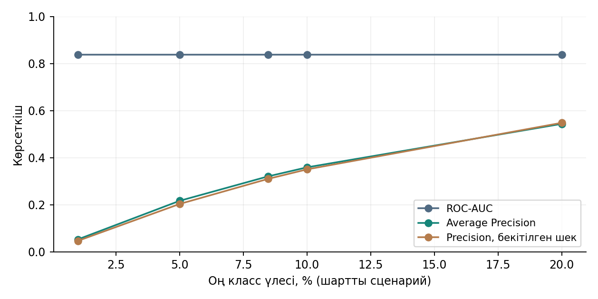
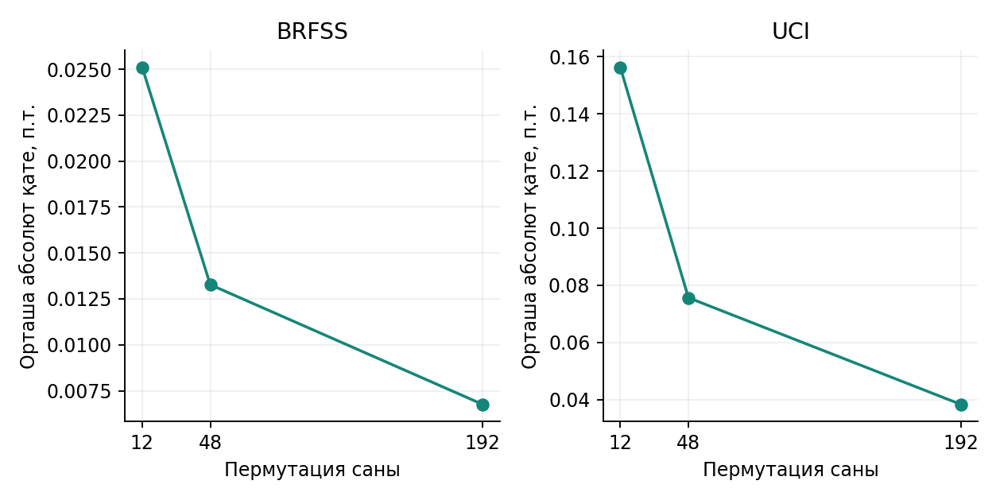
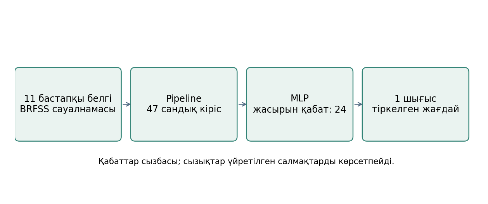

CardioResearch ғылыми талдауын толықтыру
Сарсенбаева Айдананың дипломдық жобасына арналған өлшенген қосымша тәжірибелер. 17 қараша 2026 жыл. Қазақша жұмыс материалы; негізгі қолжазбаны автор тексеріп, өз тұжырымдарымен біріктіруі қажет.
Үш мақала негізінде бос мән индикаторларының әсері, класс жиілігінің метрикаларға ықпалы және ықтималдықтардың калибрленуі зерттелді. Оған қосымша модель түсіндірмесінің сандық дәлдігі мен фондық деректерге сезімталдығы өлшенді. Негізгі модельдерді ауыстыру немесе клиникалық тиімділік туралы тұжырым жасалмайды.
Weng және әріптестерінің зерттеуінде кейбір өлшемдердің жоқтығын жеке индикатормен көрсету қарастырылған [10]. Осы идея BRFSS-те бөлек абляция ретінде тексерілді. Ұлыбританиядағы клиникалық жазбаның толтырылмауы мен сауалнамадағы жауаптың болмауы бірдей үдеріс емес; осы себепті мақала қорытындысы біздің деректерге автоматты көшірілмейді.
Бастапқы оқыту жиынындағы бекітілген 12 000 жол және бірдей үш стратификацияланған бөлу қолданылды. Екі нұсқада да Logistic Regression, C=1 және класс салмағынсыз оқыту сақталды. Өзгерген жалғыз қадам — сандық медианалық толтыруға missing indicator қосу. Индикаторлар мен барлық үйренілетін өңдеу тек тиісті оқыту бөлігінде анықталды. Тест жиыны қолданылмады; жаңа ең үздік модель таңдалмады.
| Нұсқа | AP орташа | ROC-AUC | Brier | Өңделген белгі |
|---|---|---|---|---|
| Индикаторсыз | 0.297614 | 0.820977 | 0.067685 | 47 |
| Сандық бос мән индикаторымен | 0.297626 | 0.821238 | 0.067708 | 50 |
AP айырмасы +0.00001224. Бұл шағын тәжірибе индикаторлардан елеулі ұтыс бар деген тұжырымды қолдамайды; Brier сәл нашарлады. Үш CV бағасы тәуелсіз клиникалық таңдама емес және статистикалық маңыздылық тексерілген жоқ. Қолданыстағы модель өзгертілмеді. Толық fold нәтижелері reports/literature_experiments.json ішінде сақталған.
Saito мен Rehmsmeier сирек оң класс жағдайында ROC қисығын Precision–Recall талдауымен толықтыру қажеттігін көрсетеді [11]. Осы қағиданы өз деректерімізде түсіндіру үшін BRFSS-тің бекітілген 85 748 тест болжамына класс бойынша тұрақты салмақ берілді. Әр сынып ішіндегі бағалар таралуы өзгермеді; тек сыныптардың салыстырмалы үлесі ауыстырылды. Бұл жаңа пациенттер де, BRFSS сауалнама салмақтары да емес.
| Шартты оң үлес | ROC-AUC | Average Precision | Precision |
|---|---|---|---|
| 1.000% | 0.8389 | 0.0530 | 0.0468 |
| 5.000% | 0.8389 | 0.2171 | 0.2037 |
| 8.469% | 0.8389 | 0.3209 | 0.3102 |
| 10.000% | 0.8389 | 0.3593 | 0.3507 |
| 20.000% | 0.8389 | 0.5440 | 0.5485 |

Шек 0.190424 деңгейінде сақталды. ROC-AUC шамамен 0,8389 болып қалса да, Precision мен AP өзгерді. Precision = TPR × π / (TPR × π + FPR × (1 − π)), мұнда π — оң класс үлесі. Нақты ортада сынып ішіндегі таралулар да өзгеруі мүмкін; бұл қарапайым сценарий Қазақстандағы нәтижені болжамайды. AP scikit-learn average_precision_score арқылы есептелді, трапециялық PR-AUC-пен араластырылмайды.
Van Calster және әріптестерінің мақаласына сүйеніп, орташа болжам мен нақты жиіліктің айырмасына қоса калибрлеу intercept және slope есептелді [12]. Бірінші диагностикалық модель logit(y ықтималдығы) = a + logit(p), яғни slope=1 бекітіледі. Екінші модель a + b×logit(p) түрінде екі коэффициентті бағалайды. Қажетті бағдарлар: offset intercept=0 және slope=1. Бұл коэффициенттер тестте тек сипаттама үшін есептелді және қолданыстағы болжамды түзетуге қолданылған жоқ.
| Нұсқа | Орташа қате, п.т. | Offset intercept | Slope | Brier |
|---|---|---|---|---|
| raw | +0.04344 | -0.00663 | 1.01075 | 0.06597239 |
| deployed_sigmoid | +0.08586 | -0.01302 | 1.02563 | 0.06595876 |
Екі диагностикалық intercept бір шама емес: кестеде slope=1 кезінде бағаланған offset intercept көрсетілген; slope босатылған модельдің intercept мәні JSON есебінде бөлек берілді. Қосымша sigmoid Brier-ді аздап төмендеткенімен, орташа болжамның жиіліктен ауытқуы артты. Сондықтан «калибрлеу барлық көрсеткішті жақсартты» деуге болмайды. Нөлге жақын intercept пен бірге жақын slope әр ішкі топта мінсіз калибрлеуді дәлелдемейді. Сенімділік интервалдары осы қосымша диагностикада есептелмеді.
Қосындының дұрыс болуы әр белгінің жеке үлесі дәл бағаланғанын білдірмейді. Осы айырмашылықты тексеру үшін қолданыстағы 48 пермутациялық есептеу толық коалициялық есептеумен салыстырылды [13]. BRFSS үшін 11 белгі бойынша 2 048 коалиция, UCI үшін 13 белгі бойынша 8 192 коалиция қаралды. «Дәл» деген сөз бекітілген 30 фондық жол үшін есептеуді білдіреді; ол популяциялық немесе себептік ақиқат емес.
Әр дерек жиынына сақталған оқыту фондының алғашқы 30 жолынан тыс алты профиль seed=20261117 арқылы таңдалды. Бір фонға қатысты 12, 48 және 192 пермутация 20 seed-пен салыстырылды. Барлығы 720 профиль–seed–бюджет комбинациясы есептелді, бірақ олар 720 тәуелсіз пациент емес. Профильдің жеке кіріс мәндері есепте жарияланбайды. API-дегі нақты есептеу мен коалиция кэшінен алынған есептеу сәйкестігі барлық 12 профильде тексерілді.
| Дерек | Пермутация | Орташа MAE, п.т. | Ең үлкен қате, п.т. | Top-3 сәйкес үлес |
|---|---|---|---|---|
| BRFSS | 12 | 0.02510 | 0.31872 | 100.0% |
| BRFSS | 48 | 0.01327 | 0.15761 | 100.0% |
| BRFSS | 192 | 0.00676 | 0.11034 | 100.0% |
| UCI | 12 | 0.15633 | 1.19122 | 96.9% |
| UCI | 48 | 0.07566 | 0.57458 | 97.2% |
| UCI | 192 | 0.03832 | 0.29603 | 97.5% |

| Дерек | 48 реттегі MAE, п.т. | Фон ауысқандағы MAE, п.т. |
|---|---|---|
| BRFSS | 0.01327 | 0.43205 |
| UCI | 0.07566 | 0.71100 |
Фонға сезімталдық басқа, қиылыспайтын 30 оқыту жолымен толық есептеу арқылы өлшенді. Фон ауысқандағы айырмашылық пермутациялық қатеден үлкен болды. Бұл екі шама әртүрлі: пермутациялық қате бірдей түсіндірме нысанын жуықтайды, ал басқа фон бастапқы салыстыру тобын және түсіндірменің өзін өзгертеді. Бір балама фон мен алты профиль жалпы халыққа қорытынды жасауға жеткіліксіз. Негізгі модель, 48 пермутациялық қолданба алгоритмі және шешім шегі осы тәжірибеден кейін өзгертілген жоқ.
Пайдаланушы ұсынған сурет Weng мақаласының 2-суретіне сәйкес келеді [10]. Ондағы CPRD белгілері мен желі салмақтарын BRFSS моделінің нәтижесі ретінде көрсетуге болмайды. Төмендегі сызба өз жобамыздың сақталған benchmark конфигурациясы мен ортақ өңдеу құрылымынан алынды; үйретілген MLP салмақтары қайта жасалмаған.

Бұл — зерттелген кандидаттың архитектурасы, қолданбадағы негізгі BRFSS моделі емес. Қолданба логистикалық регрессияны пайдаланады. Weng мақаласындағы он жылдық болашақ оқиға міндеті мен CardioResearch-тегі тіркелген жағдайды жіктеу бөлек. Қосымшадағы түсіндірме белгінің модель бағасына ықпалын сипаттайды, аурудың себебін анықтамайды.
[10] Weng SF, Reps J, Kai J, Garibaldi JM, Qureshi N. Can machine-learning improve cardiovascular risk prediction using routine clinical data? PLOS ONE. 2017;12(4):e0174944. https://doi.org/10.1371/journal.pone.0174944
[11] Saito T, Rehmsmeier M. The Precision-Recall Plot Is More Informative than the ROC Plot When Evaluating Binary Classifiers on Imbalanced Datasets. PLOS ONE. 2015;10(3):e0118432. https://doi.org/10.1371/journal.pone.0118432
[12] Van Calster B, McLernon DJ, van Smeden M, Wynants L, Steyerberg EW. Calibration: the Achilles heel of predictive analytics. BMC Medicine. 2019;17:230. https://doi.org/10.1186/s12916-019-1466-7
[13] SHAP documentation. ExactExplainer; PermutationExplainer. https://shap.readthedocs.io/en/latest/generated/shap.ExactExplainer.html ; https://shap.readthedocs.io/en/latest/generated/shap.PermutationExplainer.html. Тексерілген: 17.11.2026. Жобада сыртқы SHAP пакеті шақырылмайды.
Хаттамалар есептеуге дейін сақталды: reports/explanation_audit_protocol.json және reports/literature_experiments_protocol.json. Бұл бастапқы диплом хаттамасынан кейінгі қосымша зерттеу; оны бастапқы алдын ала тіркеу ретінде көрсетуге болмайды.
| Команда | Нәтиже |
|---|---|
| python -m scripts.audit_explanations --pilot | Уақыт пен бастапқы сандық сәйкестік |
| python -m scripts.audit_explanations | Түсіндірмелердің дәлдігі және фон сезімталдығы |
| python -m scripts.literature_experiments | Бос мән, жиілік және калибрлеу тәжірибелері |
| python scripts/research_extensions_document.py | Суреттер және осы есеп |
Модельдер мен бастапқы метрика файлдарының SHA-256 сомалары әр тәжірибенің алдында және соңында салыстырылды. Олардың өзгермегені JSON есептерінде расталған. Бақылаулардың тәуелділігі, шектеулі фон және BRFSS күрделі сауалнама жоспары қорытындыларды шектейді. Сайт дизайны мен интернеттегі жариялау осы зерттеу жаңартуында өзгертілмеді.